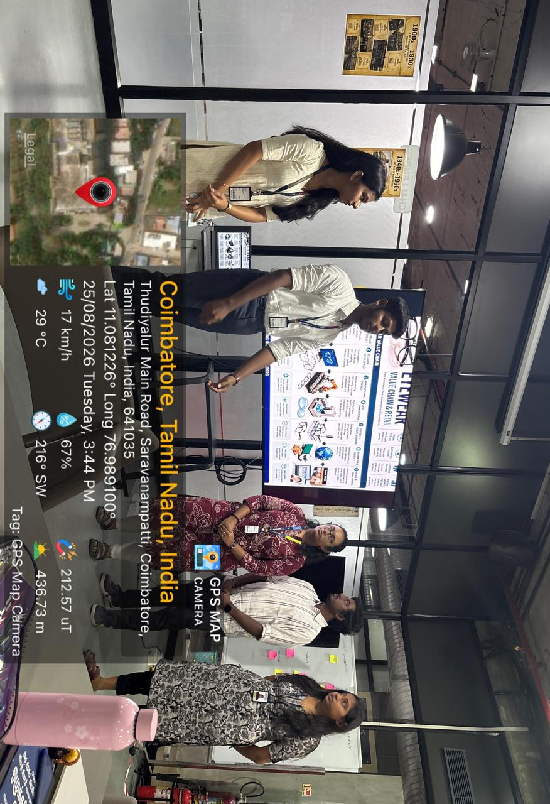
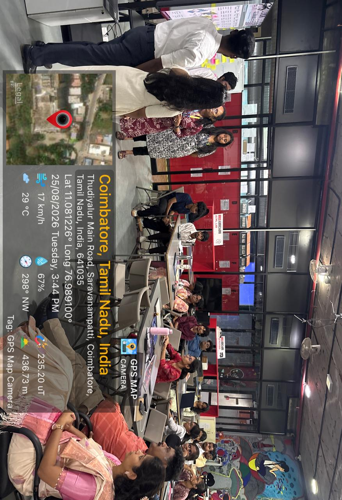
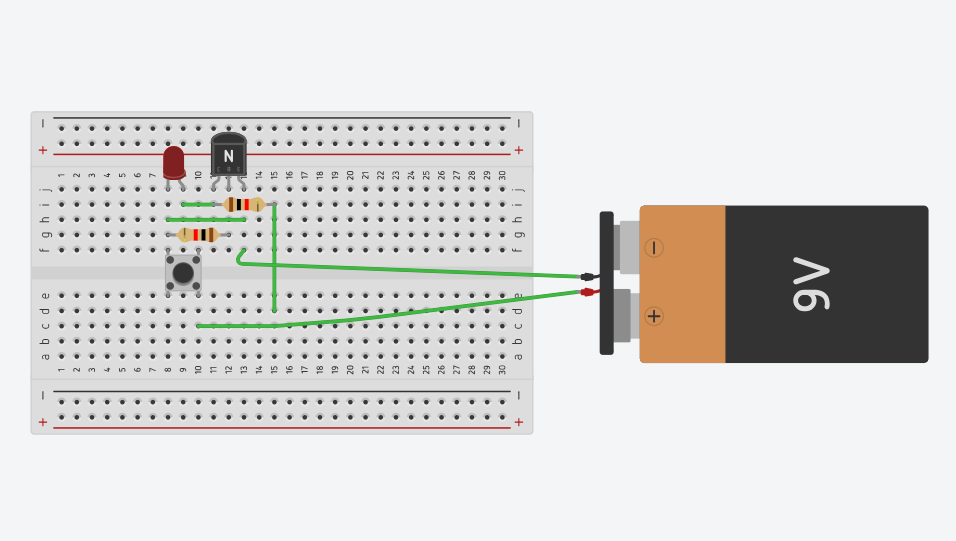
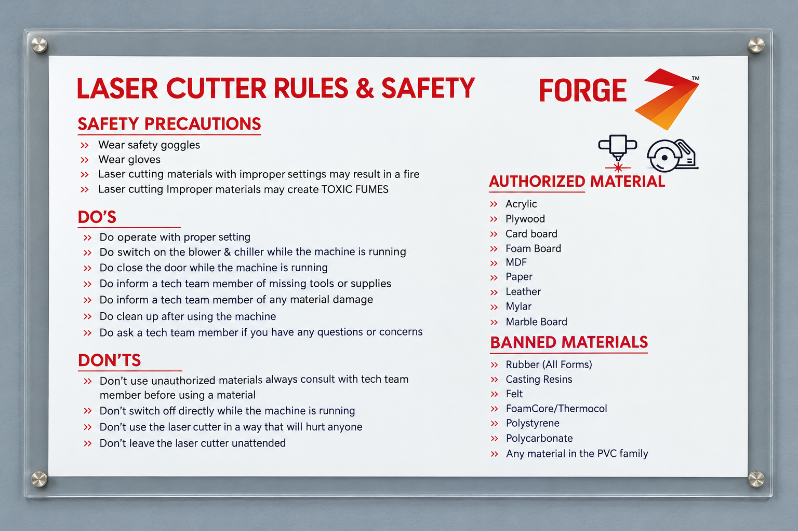
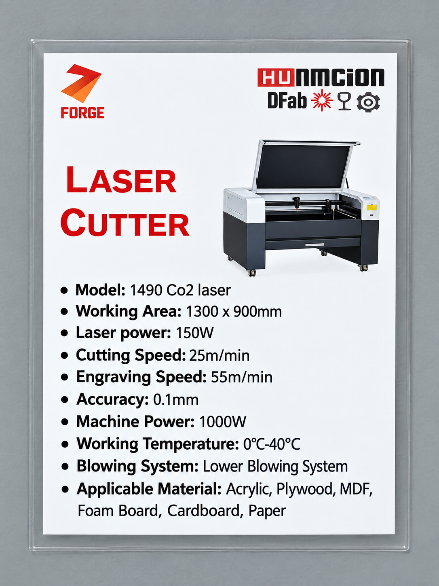
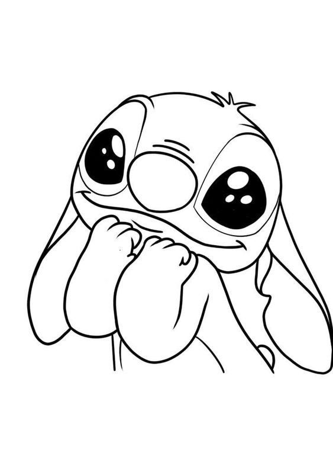
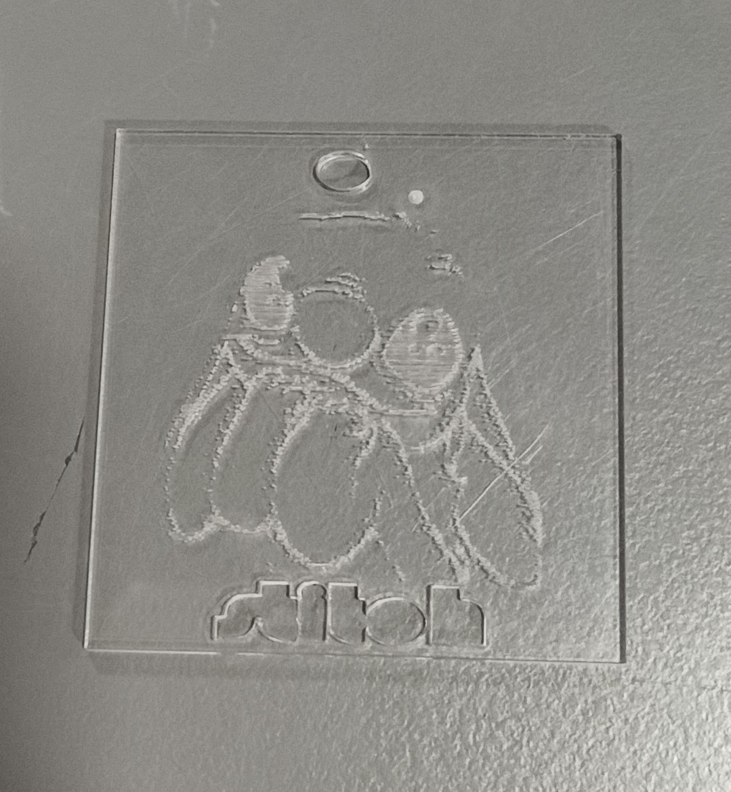
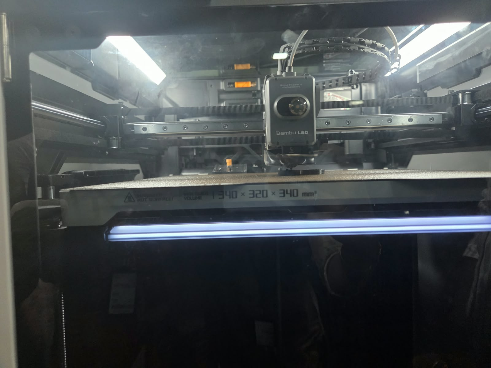

Finance meets innovation.
A commerce student building a strong foundation in finance, accounting and practical business systems, while exploring real-world commerce challenges through the PRICE ProtoSem innovation programme.
20
Week Programme
4
Phases
5+
Focus Areas
Shirley Trinita S
Finance & Innovation Aspirant
PRICE ProtoSem
B.Com (PA)
01 · About Me
Learning with a finance-first & innovation mindset.
I am pursuing B.Com (PA) at Kumaraguru College of Arts and Science. I am particularly interested in finance and accounting and enjoy developing practical skills that can support a career in the finance field. Alongside accounting tools like Tally, I am actively broadening my horizon through hands-on industry programmes focused on business problem solving.
02 · Skills & Qualifications
What I'm building
Finance Interest
Strong interest in finance and financial career opportunities.
Accounting
Academic foundation through B.Com (PA).
Tally
Completed Tally course certification.
Innovation
Exploring real-world commerce challenges through ProtoSem.
PRICE ProtoSem
Role: Innovation Engineer Trainee
Selected for a 20-week industry-integrated innovation programme focused on solving real-world retail and commerce challenges through AI, analytics, intelligent systems, IoT, prototyping, and entrepreneurship.
Programme focus
Phygital Retail
AI & Analytics
IoT
Prototyping
Entrepreneurship
03 · Programme Journey
One programme. Four phases.
Weeks 00–20, moving from exploration to practical innovation.
Weeks 00–05
Explore
Understand real-world context, problems and opportunities.
Weeks 06–10
Discover
Investigate problem statements and identify possible directions.
Weeks 11–15
Develop
Move ideas toward prototypes and practical solutions.
Weeks 16–20
Validate
Refine, test and communicate practical innovation outcomes.
04 · Programme Archive & Field Notes
Twenty-One chapters. One continuous journey.
WEEK 00
Real-World Insights from the Chennai Retail Summit
Industry exposure & retail insights
WEEK 01
From Ideas to Real-World Business Thinking
ProtoSem · Design Thinking · Business Strategy · Technology
My ProtoSem experience was enriching and immersive, providing a hands-on understanding of how technology, design thinking, business strategy, and real-life decision-making interconnect. Unlike traditional textbook learning, this seminar involved engaging activities, interactive discussions, and practical sessions that brought every concept to life.
🕶️ Choosing the Sector: Eyewear Retail
We chose Eyewear Retail as our focus sector, exploring its transformation from a health necessity related to vision correction into a booming fashion and lifestyle industry. This shift showcased how businesses identify evolving customer needs and creatively respond with products that reflect personal style and identity.
📅 Day 1 – Exploring Technology & Design Thinking
- Recommendation Algorithms: We discovered how platforms like Instagram personalize content based on our likes, searches, watch times, and interactions. We also learned how users can influence their feed by changing their online behavior.
- Design Thinking: The focus was on empathizing with users to deeply understand their needs rather than jumping to quick fixes. This mindset helps create solutions that truly resonate with customers.
- Sector Analysis: We analyzed how eyewear trends reflect broader lifestyle shifts, highlighting the importance of aligning business strategies to customer lifestyles.
📅 Day 2 – Data Insights & Strategic Tools
- Power BI Dashboards: We learned the importance of turning raw data into clear, visual insights using dashboards, enabling businesses to track performance and make informed decisions.
- IDEO's Design Thinking: Emphasized empathy, creativity, prototyping, and iterative problem-solving, reinforcing a user-centric approach in business.
- Value Chain Analysis: Dissected the eyewear business from raw materials, design, manufacturing, lenses, to assembly, distribution, and retail.
- SWOT Analysis: Identified strengths (brand appeal, fashion trends), weaknesses (high costs, competition), opportunities (new markets, digital sales), and threats (changing regulations, counterfeit products) in eyewear retail.
📅 Day 4 – Understanding Consumer Behaviour & Building Digital Presence
- Prospect Theory: We investigated the emotional assessment of savings and losses by consumers. A product reduced from ₹5,000 to ₹2,999, for example, is more appealing because of the perceived deal — demonstrating strategic pricing and marketing psychology.
- Digital Portfolio Building: A hands-on session introduced GitHub and Antigravity IDE for creating professional resumes and portfolios — vital tools for showcasing projects and skills digitally.
📅 Day 5 – Technology, Motivation, and Practical Business Insights
- App Development with Base44: Learned that modern tech tools allow even non-coders to develop applications, opening new avenues for innovation.
- Motivation & Teamwork: A story about a young boy inspiring others to clear a blocked road taught us how individual efforts can spark collective action and deeper impact.
- Inspirational Videos: Insights from the lives of Dr. A.P.J. Abdul Kalam and Bill Gates highlighted perseverance, goal-setting, and staying focused during challenges.
- Guest Lectures: Industry experts shared real-world challenges faced by agriculture, textile, and retail sectors, teaching us how businesses adapt strategies to market dynamics and customer demand.
✨ Key Takeaways
- ▸Recommendation algorithms and how digital platforms personalize content
- ▸Design Thinking and understanding customer needs
- ▸Power BI and the importance of data visualization
- ▸Value Chain and SWOT analysis in eyewear retail sector
- ▸Knowing digital tools (GitHub, portfolio platforms) is crucial for professional development
- ▸Motivation, goal setting and teamwork
- ▸Real-world challenges in agriculture, textile and retail businesses

ProtoSem – Week 01

ProtoSem – Week 01
WEEK 02
Problem Solving, Creativity & Technology
5S · Algorithms · Scratch · MIT App Inventor · Computational Thinking
📅 Day 1 – Problem Identification & 5S
We started with Problem Identification, where we learned to observe problems and think about possible solutions. We were also introduced to the Japanese 5S methodology:
- Seiri – Sort
- Seiton – Set in Order
- Seiso – Shine
- Seiketsu – Standardize
- Shitsuke – Sustain
With the help of the 5S method, we organized and managed the tools in the Red Cubical, which helped us understand how proper organization can improve efficiency and productivity.
📅 Day 2 – Algorithms & Think Like a Coder
On Day 2, we learned how to create an algorithm for making Podi Dosa. It was a simple activity, but it helped us understand how a process can be broken down into clear, step-by-step instructions.
We also watched the “Think Like a Coder” series and completed all 11 episodes. The videos introduced us to concepts such as problem-solving, logic, algorithms, loops, conditions and computational thinking through interesting stories and challenges.
📅 Day 3 – Creating a Meme Using Scratch
Day 3 was a fun and creative session. We used Scratch to create a meme within 2 minutes. This activity helped us explore basic programming while also encouraging creativity and quick thinking.
📅 Day 4 – MIT App Inventor
On Day 4, we worked with MIT App Inventor and created an app called College Connect. The purpose of the app was to help students easily know about college activities, events and updates happening in different departments.
This activity gave us practical exposure to app development and showed us how technology can be used to solve everyday problems faced by students.
✨ Week 2 Summary
Week 2 was a combination of problem-solving, creativity and technology. We learned how to identify problems, organize things using the 5S method, think logically through algorithms, explore coding with Scratch, and develop an app using MIT App Inventor. Overall, the week helped us gain practical skills and new ways of thinking beyond the classroom.
WEEK 03
Electronics, Circuits & Web Development
Electronics · PCB · Tinkercad · Web Dev · Soldering
📅 Day 4 – Basics of Electronics
Day 4 introduced us to the basics of electronics, including capacitors, semiconductors, conductors, voltage, current (AC & DC), and resistors. We then used Tinkercad to practically apply what we learned. We built a basic circuit on a breadboard by connecting a battery, resistor and bulb, and made the bulb glow. This helped us understand how electrical components work together.
📅 Day 5 – From Simulation to Real Circuit
On Day 5, we took our Tinkercad circuit and manually recreated it on a breadboard. We also built the circuit on a PCB board and used a multimeter to check the electrical connections. Finally, we learned basic soldering and secured the components to the PCB using an LED. This gave us hands-on experience in building a real electronic circuit.
📅 Day 6 – Technology & Web Development
Day 6 focused on exploring more technology. We learned the basics of changing the operating system (OS) in laptops. We also created a gaming website called “Hocky” using Antigravity and explored web application plugins for Chrome. This session helped us understand how modern tools can be used to create websites and explore new digital possibilities.
✨ Key Takeaway
As a B.Com PA student, this ProtoSem experience helped me step outside my domain and learn something completely different through practical activities. Working with electronics, circuits, soldering, web development and new technologies gave me hands-on exposure and helped me understand the importance of learning beyond our academic field.

Electronics Activity – Week 03

PCB Board – Back

PCB Board – Front
WEEK 04
Arduino, Sensors, ESP32 & IoT
Arduino Uno · Sensors (LDR, PIR, IR, DHT11, RFID) · ESP32 · OLED · IoT · Smart Traffic Light · Joystick
Week 04 was one of the most practical parts of ProtoSem. We moved from learning basic electronic concepts to programming microcontrollers, working with sensors and building interactive prototypes. The activities helped us understand how hardware and software work together in real-world applications.
📅 Day 1 – Arduino Fundamentals
We started by understanding the Arduino Uno, its main components, digital and analog pins, power connections and basic microcontroller functions. We learned how to use a breadboard to connect components without permanently soldering them.
We then wrote and uploaded simple Arduino programs and performed LED exercises. By changing the code, we could control when the LED turned ON and OFF. This gave us our first clear understanding of how programming instructions can control physical components.

Arduino Uno Microcontroller & Hardware Setup
📅 Day 2 – Sensors & Hardware Interaction
We explored different sensors, including LDR, PIR, IR, DHT11 and RFID. Each sensor helped us understand a different type of input:
- ▸LDR – detects changes in light intensity
- ▸PIR – detects human or motion movement
- ▸IR Sensor – detects nearby objects
- ▸DHT11 – measures temperature and humidity
- ▸RFID – identifies objects/cards using radio-frequency communication
We connected sensors to the Arduino and observed their readings through the Serial Monitor. We also used LEDs and motors as outputs based on sensor conditions. This helped us understand the basic concept of Input → Processing → Output.

Arduino Uno & Sensor Wiring Setup
Arduino & Sensor Demonstration Video
RFID Module Card Identification Test
📅 Day 3 – ESP32 & OLED Game Development
Next, we moved from Arduino to the more powerful ESP32. We explored its GPIO pins and built-in Wi-Fi and Bluetooth capabilities.
We connected an OLED display using I2C and added physical controls such as push buttons. We then developed a simple falling game on the ESP32. The game required us to combine programming logic, button inputs, screen graphics and continuous updates.
This activity showed us that a microcontroller can be used not only for basic automation but also for creating interactive applications and games.
📅 Day 4 – IoT & Smart Traffic System
We were introduced to the concept of Internet of Things (IoT) and learned how devices can connect to a network and communicate with each other. Using the ESP32's Wi-Fi capability, we understood the basics of connected hardware systems.
We also built a Smart Traffic Light System using red, yellow and green LEDs. By programming the LEDs to turn ON and OFF in sequence, we simulated how a real traffic signal operates. This helped us connect a simple electronic circuit with a real-world traffic management application.
📅 Day 5 – Joystick & Interactive Hardware
On the final day, we worked with dual analog joystick modules and connected them to the ESP32. We learned how joystick movements generate different analog values and how these values can be read by the microcontroller.
We calibrated the joysticks and explored how they could be used as physical controls for interactive systems. Combining the joystick with the ESP32 gave us an idea of how controllers can be used in games, robotics and other embedded applications.
✨ Overall Learning
Week 04 gave us a complete practical journey from basic Arduino programming to sensors, ESP32, IoT and interactive hardware. Instead of only learning what each component does, we actually connected, programmed and tested them.
The most valuable part was seeing how a small piece of code could create a physical action—like making an LED glow, detecting movement, displaying information or controlling a system. It helped us understand that electronics and programming are not separate; together, they can be used to build practical solutions for real-world problems.
WEEK 06
Laser Cutting & 3D Printing
Digital Fabrication · RDWorks · CO₂ Laser · FDM · Bambu Lab H2S
🔦 What is Laser Cutting?
Laser cutting is a digital fabrication process that uses a focused laser beam to cut, engrave, or mark materials. The laser is controlled by a computer according to a digital design. It provides accurate, clean, and detailed cuts and is commonly used on materials such as acrylic, wood, cardboard, and some metals.
⚙️ How Laser Cutting Works
- ▸Digital design created in RDWorks
- ▸Design sent to laser cutting machine
- ▸Focused laser beam produces intense heat
- ▸Material melts, burns or vaporizes along path
- ▸Machine moves laser according to design

Laser Cutting Process Diagram
💡 Types of Lasers & Lab Safety
- ▸CO₂ Laser – Acrylic, wood, cardboard
- ▸Fiber Laser – Cutting & marking metals
- ▸Diode Laser – Engraving wood & acrylic
- ▸Nd:YAG Laser – Industrial metal applications

Lab Safety Rules & Protocols
🔩 Machine Details & Materials

CO₂ Laser Machine Specifications
Material Specifications
| Parameter | Details |
|---|---|
| Material Type | Acrylic sheet |
| Thickness | 02 mm |
| Colour | Transparent |
Acrylic is a lightweight thermoplastic material that can be cut and engraved using a CO₂ laser, commonly used for signs, decorative products, nameplates and prototypes.
🎨 Selected Design (Stitch) & DXF Vector Conversion
The design was chosen for its engraving and cutting elements. It was converted to vector DXF format, cleaned of duplicate lines and imported into RDWorks for processing.

Vector Artwork · DXF Format
⬇ Download DXF Design File🖥️ RDWorks Nesting & Layout

RDWorks Screen Capture
| Layer | Operation | Colour |
|---|---|---|
| Layer 1 | Engraving | BLUE |
| Layer 2 | Cutting | BLACK |
▶️ Cutting Process & Final Result
Laser Cutting Video Footage

Laser Cutting In Progress

Final Acrylic Result – Hero Shot
⚡️ Problems Faced & Solutions
I had some difficulties when processing and preparing the design. I corrected the initial alignment in RDWorks, cleaned duplicate geometry, adjusted machine settings for incomplete cuts, and properly managed the exhaust and air-assist systems. Following these adjustments, the cutting and engraving was successfully completed with better accuracy and quality.
💬 Reflection
This exercise taught me the fundamentals of laser cutting — design selection, file conversion, RDWorks preparation, and safe machine operation. I gained practical skills in vector file preparation, laser machine operation, and troubleshooting.
🏆 World Cup Trophy
Rotate, zoom & explore the 3D-printed model in real time
🖨️ What is 3D Printing?
3D printing is a digital manufacturing process used to create three-dimensional objects from a digital design. The object is made by adding material layer by layer until the complete model is formed.

⚙️ How 3D Printing Works
- ▸3D model created using design software
- ▸Model converted and prepared in Bambu Studio
- ▸Slicer divides model into thin layers & generates G-code
- ▸Printer deposits material layer by layer
🖨 Types of 3D Printing
- ▸FDM – Melted plastic filament
- ▸SLA – Liquid resin cured by light
- ▸SLS – Laser fuses powdered material
- ▸DLP – Projected light to cure resin

3D Printing Technologies Overview
🖨️ Printer Details – Bambu Lab H2S

Bambu Lab H2S 3D Printer
- ▸Build volume: 340 × 320 × 340 mm
- ▸Nozzle: 0.4 mm (supports 0.2–0.8 mm)
- ▸Max nozzle temp: 350°C
- ▸Max bed temp: 120°C
- ▸Filament: 1.75 mm
- ▸Max speed: 1000 mm/s
🧱 Common Materials
🖥️ Slicer, STL & Settings
The model was sliced using Bambu Studio. An STL (Stereolithography) file represents 3D surface geometry using triangular faces, supported by all major slicing programs.

Bambu Studio Slicer Settings

STL Model Workspace View
🖨️ Printing Process & Final Result

PLA Filament Spool & Material

3D Printing In Progress on Bambu Bed

Final 3D Printed World Cup Trophy
The completed object was removed from the print bed and inspected for overall shape, surface quality, dimensional accuracy and any visible printing defects.
💡 Why 3D Printing Over Subtractive Manufacturing?
The selected object contains complex internal geometry, enclosed spaces and curved structures that are difficult to produce using conventional subtractive methods (cutting, drilling, milling). 3D printing builds the object layer by layer, making such complex geometries straightforward to produce without multiple tool setups.
WEEKS 01–05
Phase 01 Archive
Programme milestones and field notes.
WEEKS 06–10
Phase 02 Archive
Problem exploration and discovery.
WEEKS 11–15
Phase 03 Archive
Development and prototyping.
WEEKS 16–20
Phase 04 Archive
Validation and final innovation outcomes.
Weekly reflections and documentation are published periodically.
Interested in finance, innovation & growth.
Feel free to connect with me for academic, learning and professional opportunities.